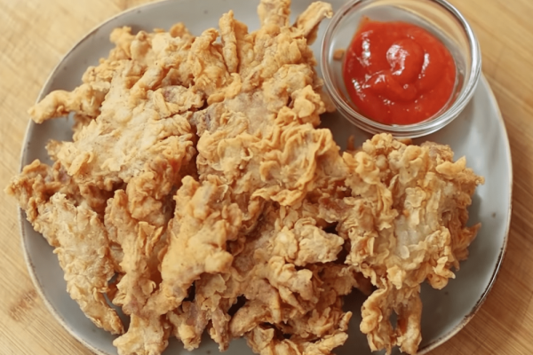
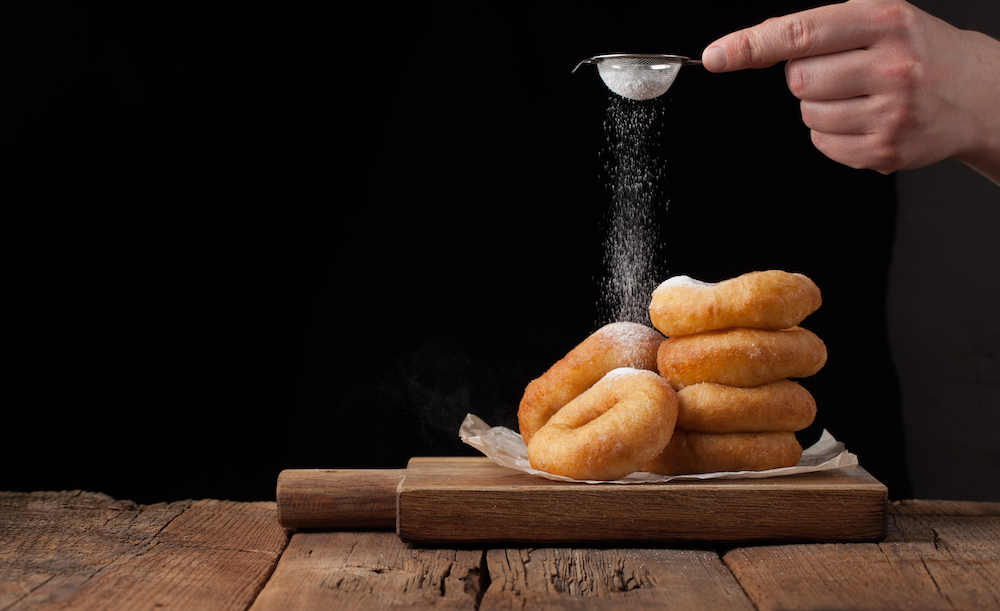

5 RESEP MAKANAN
1.lumpia goreng
BAHA BAHAN
- kulit lumpia
- pisang raja
- keju balok
- coklat
- putih telur
CARA BUAT:
- siapkan kulit lumpia,isi dengan potongan pisng,taburan mesis dan keju parut
- Gulung kulit lumpia, rekatkan ujungnya dengan putih telur.
- Goreng di minyak panas sampai garing kecokelatan.
2.JAMUR KRISPI

BAHAN BAHAN
- 2 bungkus jamur enoki, cuci bersih dan potong
- 100 gram terigu protein sedang
- 50 gram tepung beras
- 1 sdt maizena
- ½ sdt kaldu bubuk
- ½ sdt lada
- ¾ sdt baking powder
- 4 sdm air es
CARA BUAT
- Aduk rata semua bahan kecuali jamur.
- Ambil 4 sdm bahan kering, campur dengan air es.
- Balurkan jamur dengan adonan nomor
- Balurkan jamur yang sudah basah ke bahan kering sisanya.
- Goreng dengan api sedang sampai kecokelatan.
3.DONAT KENTANG

BAHAN BAHAN
- 100 gram kentang, kukus dan haluskan
- 250 gram terigu protein tinggi
- 50 gram gula pasir
- 2 butir kuning telur
- 1 sachet susu bubuk vanila
- 50 ml air es
- 6 gram ragi instan
- 35 gram margarin
- Sejumput garam
CARA BUAT
- Campur terigu, gula, susu bubuk, dan ragi sampai rata.
- Masukkan kentang, telur, dan air es sedikit demi sedikit pada adonan terigu. Uleni sampai kalis.
- Tambahkan margarin dan garam. Uleni sampai kalis.
- Buat adonan jadi bulatan besar, tutup wadah sampai sekitar 30 menit.
- Keluarkan udara dalam adonan dengan cara meninju adonan, lalu tipiskan adonan dan cetak.
- Diamkan adonan yang dicetak selama 20-30 menit, tutup dengan kain.
- Goreng donat di atas api kecil sampai matang.
- Tambahkan topping sesuai selera.
4.TAHU WALIK

BHAN BAHAN
- 12 buah tahu pong
- 100 gram daging ayam
- 200 gram udang kupas
- 1 butir putih telur
- 3 siung bawang putih
- 1 lembar daun bawang, iris
- 2 sdm sagu tani
- 1 sdm minyak wijen
- Secukupnya garam
- Secukupnya lada halus
- Secukupnya gula
CARA BUAT
- Campur dan haluskan daging ayam, udang, putih telur, dan bawang putih
- Masukkan garam, lada, gula, dan sagu tani sedikit demi sedikit, campurkan dengan adonan langkah.
- Masukkan potongan daun bawang, aduk rata.
- Belah tahu (jangan sampai putus), isi dengan adonan.
- Goreng tahu walik di api sedang sampai matang.
5.TELOR GULUNG

BAHAN BAHAN
- 2 butir telur ayam
- ¼ sdt garam
- ¼ sdt lada
- ¼ kaldu bubuk
- Minyak goreng secukupnya
- Tusuk sate secukupnya
CARA BUAT
- Kocok telur dengan garam, lada, kaldu bubuk.
- Masukkan kocokan ke dalam botol dengan lubang kecil di atas.
- Tuang adonan pada minas yang banyak.
- Masukkan tusuk sate, gulung sampai telur menempel.